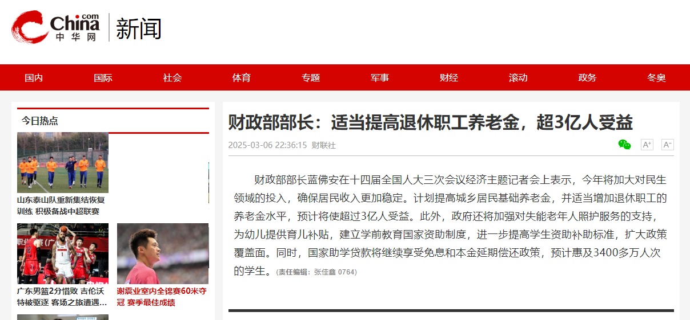
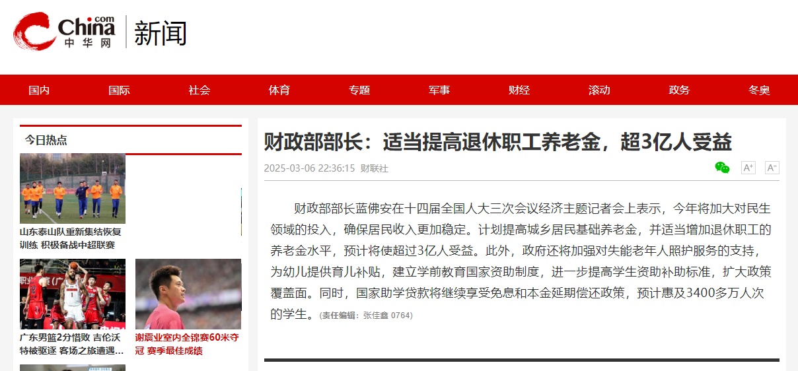

财政部部长：适当提高退休职工养老金，超3亿人受益
3月6日，财政部部长蓝佛安在十四届全国人大三次会议经济主题记者会上表示，今年加大对民生领域的投入力度，让居民收入更稳定。今年将提高城乡居民基础养老金，适当提高退休职工养老金水平，超过3亿人受益。同时，加强对失能老年人照护服务的支持，对幼儿发放育儿补贴，建立学前教育国家资助制度，对学生进一步提高资助补助的标准，扩大政策覆盖面，延续实施国家助学贷款免息和本金延期偿还政策等，预计惠及学生3400多万人次。
3月6日，财政部部长蓝佛安在十四届全国人大三次会议经济主题记者会上表示，今年加大对民生领域的投入力度，让居民收入更稳定。今年将提高城乡居民基础养老金，适当提高退休职工养老金水平，超过3亿人受益。同时，加强对失能老年人照护服务的支持，对幼儿发放育儿补贴，建立学前教育国家资助制度，对学生进一步提高资助补助的标准，扩大政策覆盖面，延续实施国家助学贷款免息和本金延期偿还政策等，预计惠及学生3400多万人次。
